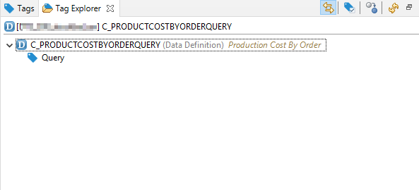

The Tag Explorer View allows the viewing of the current Tags of a given ADT object.

Figure 1: Tag Explorer View
You can pin this view to a side of eclipse and activate the Link with Editor action in the
View's toolbar. That way, the view will automatically show the ADT object of the currently
active editor.